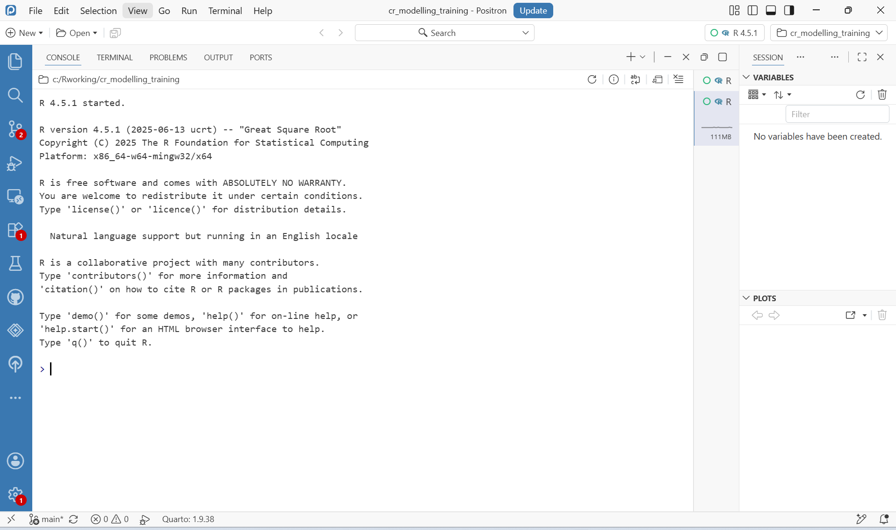
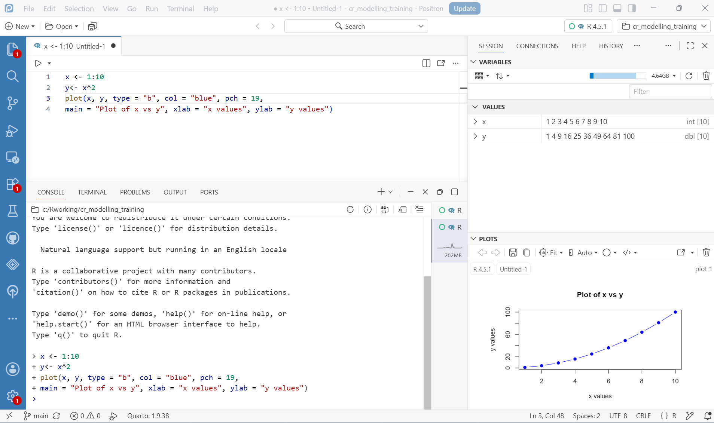
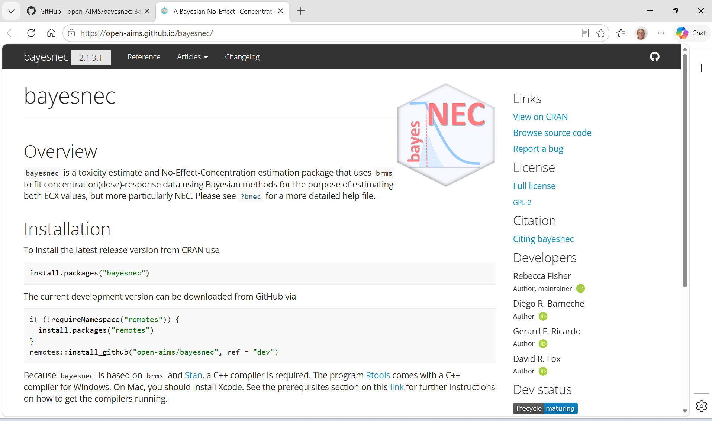
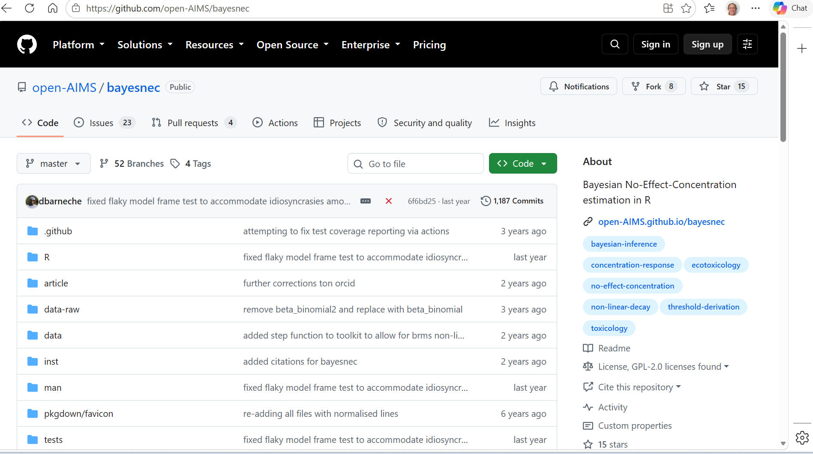

flowchart TD
A["<b>bayesnec</b><br/>concentration-response models,<br/>priors, toxicity estimates"]
B["<b>brms</b><br/>R formulas to Stan code"]
C["<b>cmdstanr</b> or <b>rstan</b><br/>the interface to Stan"]
D["<b>Stan</b><br/>the sampler, written in C++"]
E["<b>C++ compiler</b><br/>Rtools, Xcode CLT, or gcc"]
A --> B --> C --> D --> E
The software stack
What R, Stan, brms and bayesnec each do, and why all four are needed
Fitting a concentration-response model in this course sets several pieces of software working together, and a failure in any of them surfaces as an error in whichever one you were typing into. Knowing what each layer does makes those errors readable, and it explains several things about the workflow that are otherwise arbitrary: why the first model of a session is slow, why a C++ compiler has to be installed to fit a curve, and why a fitted object is large.
The working environment
R is the language. Positron is the editor used throughout the course: an environment for writing and running R, with the script you are editing in one pane and a live R session, the console, in another.
A new session starts empty.

Code is sent from the script to the console a line or a block at a time, rather than typed into the console directly. The script is then the record of what was done, and can be re-run from the top to reproduce it; the console is where it happens.

Four parts of that window are worth knowing before the first model is fitted.
The editor, top left, holds the script. Run the current line or selection with Ctrl+Enter (Cmd+Enter on macOS) and it is sent to the console below.
The console, bottom left, is the running R session. It echoes what it was sent, so Figure 2 shows the same four lines in both panes.
Variables, top right, lists every object in the session with its type and contents — x as an integer vector of ten values and y as a double in the figure. It is the quickest way to see whether an object is what you expected, which matters later when a fitted model is a deeply nested list rather than a vector.
Plots, bottom right, collects the figures produced, with arrows to step back through earlier ones and a control to save the current figure.
The interpreter in use is named at the top right of the window, with the open project beside it. Check it when something is missing that you know you installed: more than one R on a machine is common, and each has its own library, so a package installed under one is absent under another.
Two habits matter more here than in ordinary R work.
Work in a project. A project fixes the working directory, so relative paths like read.csv("mydata.csv") resolve the same way for everyone. Without one, the same script behaves differently on two machines for reasons that are tedious to diagnose.
Do not save the workspace. R offers to store the objects in memory when a session ends and to restore them when it starts. Accept that and you will eventually be working with a fitted model whose provenance you cannot reconstruct — fitted under code you have since edited, indistinguishable from a current one. Start every session empty and re-run the script. The exception is a Bayesian fit, which is expensive enough to save deliberately to a file, covered in module 2.
The dependency chain
Stan is the engine. It is a separate piece of software, not an R package, that performs Bayesian inference by Hamiltonian Monte Carlo. A Stan program describes a statistical model; Stan translates it to C++, compiles it into an executable, and runs that executable to draw samples from the posterior. This is the source of the compile step: a Stan model is a program that has to be built before it can run, which is why a C++ compiler is a requirement and why the first fit of a session takes noticeably longer than later ones.
cmdstanr and rstan are two R interfaces to Stan, and brms can use either. This course uses cmdstanr, which drives a normal CmdStan installation as a separate process. rstan embeds Stan inside R instead, which couples the Stan version to the package version and has historically been the more fragile arrangement on Windows. rstan still has to be installed, because brms imports it, but it is not the sampler here. The backend is selected once:
options(brms.backend = "cmdstanr")brms (Bürkner 2017; Bürkner 2018) removes the need to write Stan code. It takes a model written in R’s formula syntax, close to that of lme4, and generates the Stan program for it. It supports a wide range of response distributions and model structures — non-linear and smooth terms, multilevel structure, censoring, distributional regression — and provides the methods for checking a fit once it exists.
bayesnec (Fisher et al. 2020) is what this course is about. brms will fit a non-linear model, but only if you supply the equation, sensible starting values and priors for every parameter. For concentration-response work that is the barrier: the models are non-linear, the priors are not obvious, and a poorly initialised non-linear fit fails in ways that need specialist reading. This is a substantial part of why Bayesian methods are not widely used for NEC estimation in ecotoxicology, where specialist statistical support is rarely available.
bayesnec takes a short formula naming a concentration-response equation, and from that plus the data it constructs the full non-linear brms formula, generates priors and initial values, chooses a statistical distribution appropriate to the response, fits the model, and extracts toxicity estimates from it. Module 2 does exactly this in one line.
Package history
The package began as jagsNEC (Fisher et al. 2020), an implementation of the NEC model of Fox (2010) using JAGS. It was rewritten on brms and Stan, and generalised well beyond the original: the supported response distributions now include the beta-binomial alongside the Gaussian, Poisson, binomial, gamma, negative binomial and beta of the original, and any brms family can in principle be added.
The model set was also extended. Alongside the threshold models that estimate an NEC directly, it now includes smooth concentration-response equations of the kind used in frequentist packages such as drc (Ritz et al. 2015) — four-parameter logistic and Weibull curves among them — which model the response as a smooth function of concentration rather than with a breakpoint. Module 3 sets out the full set and what each one supports.
Versions
The versions in use when a model is fitted are part of the result, because defaults and estimators change between releases. Recording them costs one line:
for (p in c("bayesnec", "brms", "cmdstanr", "rstan", "posterior")) {
cat(sprintf("%-10s %s\n", p, as.character(packageVersion(p))))
}bayesnec 2.1.3.33
brms 2.23.0
cmdstanr 0.9.0
rstan 2.32.7
posterior 1.6.1cat(sprintf("%-10s %s\n", "R", getRversion()))R 4.6.1This course is built against the development version of bayesnec, which is ahead of the release on CRAN. The setup instructions name the version to install.
Documentation and support
The bayesnec reference site at open-aims.github.io/bayesnec is the place to start.

bayesnec reference site. Reference documents every exported function, Articles covers single-model and multi-model usage, the model set, priors and comparing posterior predictions, and Changelog records what changed between versions.
Reference is the authoritative description of every argument, and is worth preferring over any transcription of it, including the ones in this course. Changelog matters more than it usually does for a package under active development: estimator behaviour and default priors have both changed between recent versions.
The package is developed in the open and feedback is wanted.

A report is only actionable with a self-contained reproducible example: code and data that someone else can run to see the same behaviour. This matters particularly for a fit that fails to converge, because the cause is usually specific to the data. Without a reproducible example a convergence problem cannot be diagnosed by anyone who does not have your dataset.
References
Bürkner, Paul Christian. 2017. “brms: An R package for Bayesian multilevel models using Stan.” Journal of Statistical Software 80 (1): 1–28. https://doi.org/10.18637/jss.v080.i01.
Bürkner, Paul-Christian. 2018. “Advanced Bayesian Multilevel Modeling with the R Package brms.” The R Journal 10 (1): 395–411. https://doi.org/10.32614/RJ-2018-017.
Fisher, Rebecca, Gerard Ricardo, and David Fox. 2020. Bayesian concentration-response modelling using jagsNEC. https://doi.org/10.5281/ZENODO.3966864.
Fox, David R. 2010. “A Bayesian approach for determining the no effect concentration and hazardous concentration in ecotoxicology.” Ecotoxicology and Environmental Safety 73 (2): 123–31.
Ritz, Christian, Florent Baty, Jens C Streibig, and Daniel Gerhard. 2015. “Dose-Response Analysis Using R.” PLoS ONE 10 (12): e0146021. https://doi.org/10.1371/journal.pone.0146021.